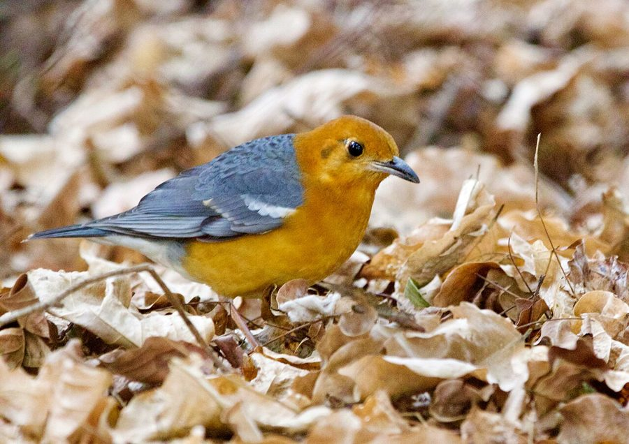

ऑरेंज-हेडेड थ्रशOrange-headed Thrush
Geokichla citrina · Turdidae · BRD-0209

- Scientific name वैज्ञानिक नाम
- Geokichla citrina (Latham, 1790)
- Family कुल
- Turdidae
- Hindi हिंदी
- ऑरेंज-हेडेड थ्रश
- Local names स्थानीय नाम
- orange-headed thrush, orange headed thrush, thrush
- Status here यहाँ की स्थिति
- native
- Movement आवागमन
- Resident; numbers rise with migrants
- Known from कहाँ दर्ज
- Others have published records from the Basti–Ayodhya districts बस्ती–अयोध्या के ज़िलों से दूसरों के प्रकाशित अभिलेख
- IUCN IUCN
- LC
- Review समीक्षा
- audited and independently read
When to look कब देखें
Expected mainly in January, February, March, April, May, June, September, October, November, December. मुख्यतः जनवरी, फ़रवरी, मार्च, अप्रैल, मई, जून, सितंबर, अक्टूबर, नवंबर, दिसंबर में अपेक्षित।
Northern populations migratory; southern resident or partially migratory. In eastern UP, observed throughout year with increase in winter visitors from September–April from breeding grounds in Himalayas. Expected in mixed wet habitats with woodland cover. All migrants and visitors →
Uses and possibilities उपयोग और संभावनाएँ
Drawn from the documented uses in the profile below, where each is labelled traditional, current or a research lead. All uses →
ऑरेंज-हेडेड थ्रश / Orange-headed Thrush
Geokichla citrina (Latham, 1790) — Turdidae
ऑरेंज-हेडेड थ्रश — सुंदर चिड़िया जिसके सिर पर नारंगी रंग होता है। पूर्वी उत्तर प्रदेश के जंगलों और बागों में साल भर मिलती है, विशेषकर सर्दियों में संख्या बढ़ जाती है। जमीन पर कीड़े और फल खाती है। शर्मीली और छिपी हुई चिड़िया है।
Quick Identification त्वरित पहचान
| Feature | Description |
|---|---|
| Size | Medium thrush; 21–23 cm long |
| Build | Sturdy, upright posture |
| Head | Distinctive orange-rufous (male); duller (female) |
| Back | Dark olive-brown |
| Underparts | Orangish-buff (male); duller (female) |
| Wings | Dark with pale edges |
| Tail | Dark brown; often cocked |
| Behaviour | Ground-dwelling; shy; forages in shade |
Field tip: A shy, medium-sized thrush of forest floors and shady areas. The orange-rufous head (in males) is distinctive. Females and juveniles are duller but still show orange tones. Often detected by its alarm call before being seen. Forages on ground in woodland shade.
हिंदी — कैसे पहचानें:
नर का सिर नारंगी।
मादा धूसर-भूरी।
जंगल की जमीन पर दिखता है।
बहुत शर्मीली चिड़िया।
Morphology आकारिकी
Biometrics:
| Measurement | Range |
|---|---|
| Total length | 210–230 mm |
| Wing | 100–115 mm |
| Tail | 85–100 mm |
| Bill | 18–22 mm |
| Tarsus | 28–32 mm |
| Weight | 28–40 g |
Size: 21–23 cm long; wingspan 33–38 cm. Medium-sized thrush.
Male plumage: Head, neck, and upper breast orange-rufous. Back olive-brown. Wing-coverts dark. Flight feathers dark brown with pale fringes. Tail dark brown. Lower breast and belly orange-buff.
Female plumage: Much duller than male. Head and neck greyish-brown. Upper back olive-brown. Upper breast greyish-orange; lower breast and belly buff.
Juveniles: Similar to females but with heavy spotting on underparts.
Bill: Long, pointed, slightly curved; adapted for ground foraging.
Legs and feet: Pinkish-brown; relatively long for thrush, adapted for ground foraging.
Vocalisations. Call repertoire:
- Alarm call: A sharp tsi-tsi-tsi or tuck-tuck, given when alarmed.
- Contact call: A soft chup or chip.
- Song: A pleasant, flute-like warble; more elaborate on breeding grounds. Frequency.
हिंदी: तीक्ष्ण "त्सी-त्सी" अलर्ट कॉल। नरम "चप" संपर्क कॉल। सुंदर गीत।
Behaviour & Ecology व्यवहार और पारिस्थितिकी
Ground forager: Orange-headed Thrush forages primarily on the ground in leaf litter and among fallen branches. It feeds on:
- Insects and larvae
- Earthworms and molluscs
- Small spiders
- Fruits and berries (seasonal)
Foraging: Hops on ground, picking insects from soil and leaf litter. Also forages in low vegetation and on trees.
Social behaviour: Generally solitary or in pairs; sometimes loose groups with other thrushes.
Roosting: In trees and bushes, often in shade.
Predators: Snakes, larger raptors, occasionally shrikes. Chicks vulnerable to snakes and crows.
Habitat use: Strictly woodland-associated; rarely found in open areas. Prefers mixed deciduous forests and woodland with dense undergrowth.
हिंदी: अकेला या जोड़ों में रहता है। जंगल की जमीन पर कीड़े और फल खाता है। घने जंगल में छिपा रहता है।
Life Cycle / Phenology जीवन चक्र
| Month | Event |
|---|---|
| January–February | Winter residents in eastern UP; feeding |
| March–April | Some departure northward; others remain |
| May–June | Breeding in Himalayas; partially absent from eastern UP |
| July–August | Post-breeding dispersal; return begins |
| September–October | Autumn arrival of winter visitors |
| November–December | Peak numbers; winter residents settled |
Breeding: Partially migratory. Breeds in Himalayas (May–July); some populations breed in eastern UP. Nest in tree cavity or on branch among dense vegetation. Clutch typically 3–5 eggs.
Moult: Prebasic moult occurs post-breeding (July–September).
Site fidelity: Some individuals show philopatry to wintering areas.
हिंदी: कुछ साल भर यहाँ रहते हैं, कुछ सर्दियों में आते हैं। हिमालय में प्रजनन करते हैं। सितंबर से अप्रैल तक संख्या बढ़ी रहती है।
Host Plants or Prey आहार
| Food Type | Examples | Feeding Behaviour |
|---|---|---|
| Insects | Beetles, flies, caterpillars | Gleaned from ground and leaf litter |
| Earthworms | Lumbricides | Probed from damp soil |
| Small molluscs | Snails | Crushed against stones |
| Fruits and berries | Various wild fruits | Taken seasonally |
| Spiders | Ground-dwelling spiders | Picked from vegetation and soil |
हिंदी: कीड़े, केंचुए और फल खाता है। जंगल की जमीन से खाना निकालता है। फलों का मौसम में अधिक खाता है।
Predators / Natural Enemies शत्रु
- Avian predators: Snake Eagles, occasionally shrikes, hooded crows
- Reptile predators: Snakes, occasionally monitor lizards
- Mammalian predators: Weasels, civets, mongooses (chicks)
- Nest predators: Snakes, crows, monitor lizards
हिंदी: सांपों और शिकारी चिड़ियों का शिकार होता है। घोंसले में अंडों को कौवे खतरे में डालते हैं।
Agricultural / Human Relevance कृषि प्रासंगिकता
Protected species: The Orange-headed Thrush is protected under the Wildlife (Protection) Act 1972. Hunting is prohibited in India.
Ecosystem service: Feeds on insects including pests, contributing to natural pest control in woodlands.
Indicator species: Presence indicates healthy deciduous forest and woodland ecosystems with good understory and insect populations.
Forest health: Dependent on intact forest cover; presence or absence indicates forest management quality.
Cultural relevance: Appreciated by birdwatchers for its beauty and melodious song.
Habitat loss: Threatened by deforestation and loss of woodland cover.
हिंदी: यह विधि अधिनियम 1972 के तहत संरक्षित है। इसका शिकार करना कानूनी रूप से निषिद्ध है।
Expected Locally स्थानीय रूप से अपेक्षित
Not a field record. Written from published accounts for eastern Uttar Pradesh. No confirmed local sighting yet — if you have seen it, that is what the atlas needs.
अभी तक स्थानीय पुष्टि नहीं। यह विवरण प्रकाशित स्रोतों से है, किसी अवलोकन से नहीं।
Year-round range: Expected in eastern UP in deciduous forests and woodland areas, particularly in areas with intact understory. GBIF holds published records from the wider Awadh–Purvanchal plain. Particularly expected in the riparian woodlands along the Ghaghra and Rapti, and any remaining sal or mixed deciduous forest patches.
Habitat preference: Deciduous forests with dense undergrowth; woodland edges; gardens with tall trees and shade.
Peak season: November–March, when numbers are supplemented by Himalayan winter visitors.
Detection: Listen for its alarm call or song in suitable forest habitat, particularly early morning. Watch the ground in shaded areas.
What a first record would be: A dated photograph or detailed observation of the bird in eastern UP submitted through the About page, with location and date.
हिंदी: जंगलों और घने पेड़ों वाली जगहों पर साल भर अपेक्षित, सर्दियों में संख्या बढ़ी। घाघरा और राप्ती के पास पेड़ों की पट्टी में आम। शर्मीली चिड़िया; उसकी अलर्ट कॉल से पहचान।
Distribution वितरण
Global range: Across Asia from the Middle East through the Indian subcontinent to South-East Asia. Partially migratory with resident populations in southern Asia.
In India: Distributed throughout India in suitable forest habitats, both as residents and seasonal visitors.
In Uttar Pradesh: Throughout the state in woodland and forest areas; more common in eastern districts with better forest cover.
In Basti district / eastern UP: Expected in remaining deciduous forests and woodland areas; status needs confirmation in the field.
Research Questions शोध प्रश्न
- What is the seasonal status (resident vs. migrant) of Orange-headed Thrush in eastern UP?
- How do changes in forest cover and woodland fragmentation affect population numbers and habitat use?
- What is the diet composition during breeding vs. non-breeding seasons in eastern UP?
- जंगल के विभिन्न प्रकार (साल, मिश्रित पर्णपाती) में इसकी उपस्थिति में अंतर क्या है?
- What is the breeding success and productivity of populations in eastern UP? (A child can observe nesting behaviour and monitor nest success.)
- क्या यह प्रजाति जंगल के नुकसान के कारण पूर्वी उत्तर प्रदेश से घट रही है?
Similar Species मिलती-जुलती प्रजातियाँ
| Species | Key Difference | Hindi | Field Rule |
|---|---|---|---|
| Spot-breasted Thrush (Zoothera spiloptera) | Smaller; heavily spotted underparts; no orange head | धब्बेदार थ्रश | Spot-breasted has spotted underparts all over. Orange-headed is larger with clear orange. |
| Nilgiri Thrush (Zoothera neilgherriensis) | Different range; spotted underparts | नीलगिरि थ्रश | Nilgiri is smaller with different habitat preference. |
Field rule: The Orange-headed Thrush is a medium-sized, shy, forest-floor thrush with a distinctive orange-rufous head (in males). The combination of orange head and olive-brown back is diagnostic. Females are duller but still show orange tones.
Taxonomy & Classification वर्गीकरण
Original description. The species was described by Latham in 1790. The type locality is India.
Subspecies. Multiple subspecies across Asia; G. c. citrina occurs in India.
Family and order placement. Order Passeriformes; family Turdidae (thrushes). The genus Geokichla contains several ground-dwelling Asian thrushes.
Phylogenetic notes. Related to other Geokichla species across Asia; part of a clade of ground-dwelling thrushes.
IUCN status rationale. Assessed as Least Concern (LC) globally. Populations are stable though threatened by habitat loss. The species is dependent on intact forest ecosystems. In India, it is protected under the Wildlife Protection Act 1972.
हिंदी: एशिया में व्यापक। भारत में जंगलों में रहती है। कानून से पूरी तरह सुरक्षित है।
Photo Gallery फोटो गैलरी
No photos yet — add field photos to media/species/orange_headed_thrush/ and run node scripts/sync_photos.js.
Wanted photos:
- Male showing orange head and underparts
- Female, showing duller plumage
- Foraging on ground
- In woodland habitat
- Close-up of head
References संदर्भ
- Latham, J. (1790). Index Ornithologicus. Vol. 1. Leigh & Sotheby, London. Pp. 368–369.
- Ali, S. & Ripley, S. D. (1973). Handbook of the Birds of India and Pakistan. Vol. 9 (Warblers to Redstarts). Oxford University Press, Delhi. Pp. 72–75.
- Cramp, S. (ed.) (1988). Handbook of the Birds of Europe, the Middle East and North Africa: The Birds of the Western Palearctic. Vol. V (Tyrant Flycatchers to Thrushes). Oxford University Press. Pp. 832–837.
- Rasmussen, P. C. & Anderton, J. C. (2005). Birds of South Asia: The Ripley Guide. Smithsonian Institution, Washington, D.C. Pp. 509–510.
- GBIF Occurrence Data — Geokichla citrina, India.
- IUCN Red List (2024). Geokichla citrina — BirdLife International assessment. IUCN, Cambridge. Status: Least Concern.
Source file: species/fauna/birds/orange_headed_thrush.md